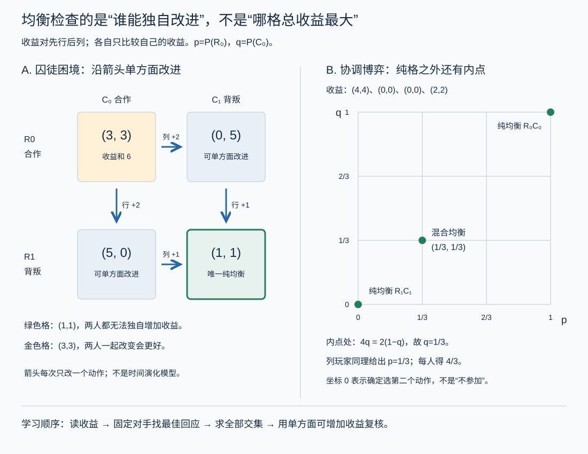

博弈论 I · 策略型博弈与 Nash 均衡
优化理论假设世界不还手；博弈论研究对手也在优化的世界——你的最优依赖他的选择，他的最优依赖你的。本页立好策略型博弈的语言，走到全学科的中心概念 Nash 均衡：它的定义只有一句话，存在性证明却要动用不动点定理——拓扑学在社会科学里最著名的一次出手。

1. 博弈三要素与囚徒困境
策略型（标准型）博弈：玩家集合、每人的策略集、每人的收益函数（依赖所有人的策略组合）。二人有限博弈写成收益矩阵。
囚徒困境（全学科的果蝇）：
| 对方沉默 | 对方招供 | |
|---|---|---|
| 沉默 | \((-1, -1)\) | \((-10, 0)\) |
| 招供 | \((0, -10)\) | \((-5, -5)\) |
无论对方怎么选，"招供"都严格更优（优势策略）⇒ 双双招供 \((-5,-5)\)——尽管双双沉默 \((-1,-1)\) 对两人都更好。个体理性的合力可以是集体的灾难：军备竞赛、价格战、内卷、公地悲剧、刷分军备——全是这张 2×2 矩阵的换皮。它宣告了"看不见的手"的适用边界，也是后面一切"如何走出困境"讨论（重复博弈、机制设计）的靶子。
求解第一板斧：严格劣策略反复消去（IESDS）——理性的公共知识允许逐层删掉"任何情况下都不该用"的策略；能删到只剩一格最好，多数博弈删不动，于是需要——
2. Nash 均衡
定义 策略组合 \((s_1^*, \dots, s_n^*)\) 是 Nash 均衡：每个玩家的策略都是对其他人策略的最佳回应——单方面偏离不能获益：
读法：不是"最优的结果"，是"自我强化的僵局"——一旦大家都这么玩，没人有动机先动（囚徒困境的双招供是 NE，尽管它糟糕：均衡 ≠ 效率，这是本页第二个重要教训）。纯策略 NE 的找法（划线法）：对每个对手策略列，给自己的最佳回应画线；双双画线的格子即 NE。
多重均衡与协调问题：猎鹿博弈（合作猎鹿 vs 各自抓兔）有两个纯 NE——(鹿,鹿) 高效但要互信，(兔,兔) 保守但稳。均衡选择靠博弈之外的东西：惯例、沟通、制度、焦点效应（Schelling point）——"为什么大家都靠右行驶"的数学位置。
3. 混合策略与存在性定理
猜硬币（我配你反）没有纯 NE——任何确定选择都会被对手利用。出路：随机化。混合策略 = 策略上的概率分布，收益取期望（概率 IV 上岗）。
无差异原则（手算引擎）：混合均衡中，你的混合概率必须让对手在其所用的纯策略间恰好无差异（否则他会全押更优的那个，你的混合就被利用）。例：猜硬币双方各 \(\frac12\)——让对手左右为难恰是自保（扑克的诈唬频率、点球的方向分布、猜拳的均匀随机都由此定量化）。
定理（Nash 1950） 任何有限博弈（有限玩家、有限策略）必存在至少一个（混合策略）Nash 均衡。
证明思路（一段话，值得记住轮廓）：混合策略组合的空间是单纯形之积（紧凸集）；"所有人同时换成最佳回应"定义了一个（集值）映射；收益连续 ⇒ 映射满足 Kakutani 不动点定理（Brouwer 的集值推广——拓扑页紧致性 + 凸性的合演）的条件；不动点 = 人人都在最佳回应 = NE。\(\blacksquare\) ——与一般均衡存在性（Arrow–Debreu）同款武器；"均衡存在"这类经济学大定理的数学芯片都是不动点（泛函 I 压缩映像的非构造性亲戚：保证存在，不告诉你在哪——计算 NE 是 PPAD-难，另一个故事）。
4. 典型例题
例 1（划线法） 性别之战：\((2,1)\) 看球 / \((1,2)\) 看剧 / 错开各得 0。划线得两个纯 NE（一起看球、一起看剧）+ 一个混合 NE（各 \(\frac23\) 押自己偏好，期望收益 \(\frac23 < 1\)——混合均衡可以劣于任一纯均衡：协调失败有价）。
例 2（无差异原则手算） 上例的混合 NE：设男方以 \(p\) 看球，要让女方无差异：\(1\cdot p = 2(1-p) \Rightarrow p = \frac23\) ✓（注意：你的概率由对手的收益定——初学最反直觉的一步）。
例 3（公共品博弈） \(n\) 人各选贡献 0 或 1，总贡献翻倍均分：贡献 1 的私人回报 \(\frac{2}{n} < 1\)（\(n > 2\) 时）⇒ 全员搭便车是唯一 NE——囚徒困境的 \(n\) 人版；税收/强制缴纳社保的博弈论辩护词。\(\blacksquare\)
下一页：可以"完全对立"的博弈有更漂亮的理论——极小极大定理与 LP 对偶的会师；再引入时间（动态博弈）与重复（合作的可能性），最后到拍卖与机制设计。